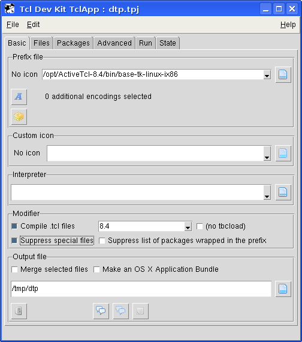
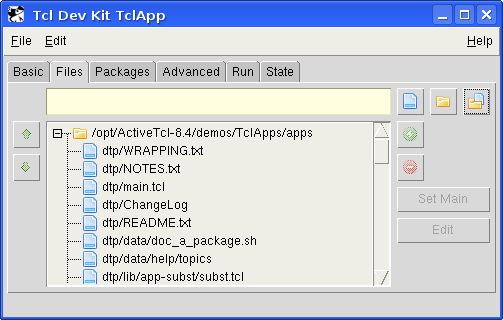
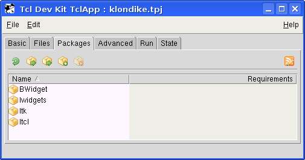
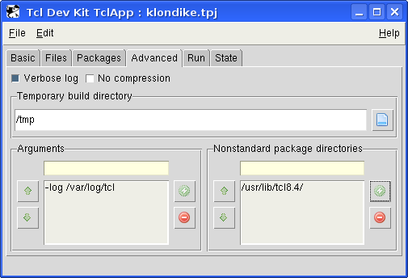
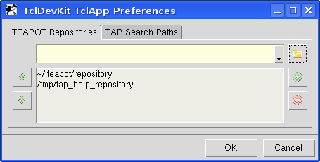

@header@
TclApp
An application that you write in Tcl can consist of many components, such as:
- One or more Tcl scripts
- Either a standard or a custom Tcl interpreter
- The standard Tcl libraries and support files (for example, init.tcl)
- Optionally, the standard Tk libraries and support files
- Optionally, one or more extensions implemented as libraries of Tcl scripts
- Optionally, additional data files such as bitmaps
Traditionally, if you wanted to distribute an application that you wrote in
Tcl, you would need to make sure that all of the files that your application
used were installed on the target system. You would also need to make sure that
the system was configured so that your application could find all of the files it
needed.
Tcl Dev Kit's TclApp can greatly simplify the process of distributing an
application that you write in Tcl. TclApp is a tool that collects all of the
files needed to run a Tcl application--such as Tcl scripts, graphics and other data
files, Tcl extensions, a Tcl interpreter, and the standard Tcl and Tk
libraries--into a single executable file. A user can then install this file
anywhere on their system and execute it without installing any other packages
or otherwise configuring their system.
TclApp includes both a graphical and a command-line interface. To launch
the graphical interface, on Windows, select Tcl Dev Kit TclApp
from the Tcl Dev Kit program group on the Windows Start menu. Alternatively,
enter tclapp.exe at the command prompt. On Unix, enter
tclapp at the shell prompt. To use the command-line version of
TclApp, follow the tclapp.exe (or tclapp, on Unix)
command with switches.
For example, the command shown below creates an executable named myApp.exe
containing the standard Tcl and Tk libraries, the Tcl scripts
myApp.tcl and help.tcl, and several GIF images from a
subdirectory named images. The following example assumes the command is
run on a Windows system. To run the same command on a Unix system, substitute
the appropriate command-line syntax (tclapp without the .exe file
extension).
C:\> tclapp.exe -prefix base-tk.exe -out myApp.exe myApp.tcl help.tcl images\*.gif
Executing the resulting myApp.exe file is equivalent to entering:
C:\> wish myApp.tcl
To learn about TclApp in a tutorial, see
TclApp on the Demos page for
more information.
A starkit is a single file that packages a set of Tcl
scripts, platform-specific compiled code and application data. It relies on
an external run-time interpreter. A starpack is a single
executable file that contains both a starkit and an interpreter.
TclApp generates a starpack when a basekit is specified as a build
option. Specify a basekit in the Prefix file field on the
Basic Tab in the graphical
TclApp, or using the -prefix option on
the command line. See Specifying the Interpreter:
Creating Starpacks and Starkits for more information.
See http://www.equi4.com/191 for an
Anatomy of a starkit.
Converting Starkits to Starpacks
The command-line version of TclApp includes a -genpak
option used to convert an existing starkit to a starpack. The command syntax
is as follows:
tclapp -genpak \
basekit \ (Like -prefix in regular use)
starkit \ (The starkit to convert)
result \ (Like -output in regular use)
... (Aditional regular options)
For example, tclapp -genpak mybasekit mystarkit myresult will
generate a file called "myresult" that uses the prefix file "mybasekit" and
contains the contents of "mystarkit".
This command is the equivalent of:
- Unpacking the starkit into a temporary directory.
- Running the command:
tclapp -prefix basekit -out result \
-anchor / -nospecials -relativeto TempDir \
_All_Files_Under_TempDir_
- Deleting the temporary directory.
Splitting Starpacks
The command-line version of TclApp includes a
-splitpak option used to split a starpack into the
runtime and the attached filesystem. The command syntax is as
follows:
tclapp -splitpak \
starpack \ (The starpack to split)
runtime \ (Where to store the runtime)
filesystem \ (Where to the attached filesystem)
For example, tclapp -splitpak mystarkit myruntime myfs will
generate two files called "myruntime" and "myfs" that are the interpreter
and attached filesystem of the starpack "mystarpack".
Removing wasted space
The command-line version of TclApp includes a -vacuum
option to remove wasted space from starkits and starpacks. The command syntax
is as follows:
tclapp -vacuum starkit
tclapp -vacuum starpack
For example, tclapp -vacuum mybasekit will remove all
wasted space inside of "mybasekit". The result is written back to
"mybasekit".
Note about Starpacks
Tclkits and basekits (files matching base-* in ActiveTcl's
bin directory, and ActiveState's TEApot repository) limit
::auto_path by default to only look in the wrapped
application's lib directory upon startup. This means the
application in the starpack is unable to find packages outside of
itself. To circumvent this restriction, the application can extend
::auto_path to include the location the unwrapped
additional packages that it needs.
This solution has compatibility and security implications. This
default behavior exists to ensure that starpacks are seen as completely
self-contained. By allowing them to search externally for packages, it
becomes possible to substitute the packages it uses with incompatible
versions or arbitrary code by incrementing the minor version number.
This is independent of the order of paths in ::auto_path. Use
package require -exact in the application and its
dependencies to prevent this from happening if you extend
::auto_path.
There are minor differences in the way an application runs when it is wrapped
versus when it runs unwrapped. However, it is relatively easy to modify your
application so that you can test it in unwrapped form, and then wrap the
same files for distribution. This section shows you how to change your
application to ensure that it works properly both unwrapped and wrapped. This
section also covers wrapping custom packages.
Detecting when an Application Is Wrapped
Because TclApp supports the Virtual Filesystem, the
tcl_platform(isWrapped) variable is no longer
required. Conditional code that relies on this variable should generally
be rewritten to make use of standard filesystem operations.
If you have a special case where you need to check the status of an
application (wrapped or unwrapped), use the following code in the
application:
set iswrapped [expr {[lindex [file system [info script]] 0] ne "native"}]
The status variable iswrapped will be true or false
depending on the result of the test.
Modifying Custom Shells
TclApp can use specially written Tcl interpreters to work with
wrapped applications in Starpacks. When using the command-line TclApp,
specify interpreters using the -prefix switch.
Creating a Statically Linked Wrapped Application with a Standard Interpreter
and Custom Initialization Files
When creating a statically linked wrapped application with a standard
interpreter and custom Tcl initialization files, your tclapp
command line must include the following:
- All of your custom Tcl initialization files
- Any -code options that are required to initialize
other Tcl configuration variables such as tk_library.
For example, the following wraps an application with the basekit
and a set of initialization files contained in the directory
/usr/local/siteTcl/lib:
% tclapp -prefix base-tcl-win32-ix86.exe -out myApp myApp.tcl img/*.gif \
/usr/local/siteTcl/lib/tcl8.2/*.tcl \
/usr/local/siteTcl/lib/tcl8.2/tclIndex \
/usr/local/siteTcl/lib/tcl8.2/encoding/*.enc \
/usr/local/siteTcl/lib/tk8.2/*.tcl \
/usr/local/siteTcl/lib/tk8.2/tclIndex \
-code "set tk_library usr/local/siteTcl/lib/tk8.2"
Accessing Files from a Shared Directory
Files shared by multiple applications or projects are typically put in a
shared directory, often on a file server. An application myscript.tcl
might then access those files as follows:
set shared {Z:\tcl\common}
source [file join $shared help.tcl]
source [file join $shared display.tcl]
Unfortunately, because of the absolute pathname, the code above no longer
works if you wrap the files in the shared directory with the application.
However, you can easily modify this code to work either unwrapped or wrapped
by testing to see whether the application is wrapped and modifying the value of
shared appropriately. For example:
if {[info exist starkit::startup]} {
set shared [file join starkit::topdir ... common]
} else {
set shared {Z:\tcl\common}
}
source [file join $shared help.tcl]
source [file join $shared display.tcl]
You would then need to wrap the shared files using the
-relativeto, -anchor and -alias
flags (if using the command-line TclApp) or by
specifying relative paths (if using the graphical TclApp wrapper), as in the
following example:
C:> tclapp myscript.tcl -relativeto Z:\tcl Z:\tcl\common\*.tcl
Accessing Wrapped Files Relative to a Script's Directory
A common trick to avoid hard-wiring pathnames into scripts is to figure out
where the script is located with the info script command and
then accessing files relative to the script's directory. For example:
set home [file dirname [info script]]
source [file join $home help.tcl]
source [file join $home display.tcl]
When wrapping an application containing custom packages, you must create a
custom TclApp Package definition (.tap) file for each package. The
.tap file specifies the files contained within each custom package.
Use the TDK Package Editor to
create a new package or to
save a package definition
(.tap) file.
To ensure TclApp finds all custom packages and .tap files when wrapping
an application, choose from the following options below. Note that TclApp finds
custom .tap files for packages not included with the Tcl Dev Kit using
either option.
For information on moving packages and .tap files, see
Using Placeholders for Portability
in the Package Editor guide.
Custom binary packages must be built with the Tcl stubs mechanism
initialized (i.e. using Tcl_InitStubs(interp, version,
exact)) to work with TclApp. For more information, see How to
Use the Tcl Stubs Library and the Tcl_InitStubs
man page.
 Top
Top
Tcl Dev Kit TclApp is a graphical interface for the
TclApp wrapper. To launch the graphical wrapper, select Tcl Dev Kit
TclApp from the Tcl Dev Kit program
group on the Windows Start menu, or enter tclapp on the
command-line. (To launch the command-line wrapper, you must specify arguments
with the tclapp command.)
When running the graphical wrapper on Unix systems, the
DISPLAY environment variable must be configured in order
to launch the program.
Field and Color Conventions
- Case Sensitivity: Path and file name specifications
are not case-sensitive on the Windows platform, but are case-sensitive on
Unix platforms.
- Directory Slashes: Either frontslashes or backslashes
can be used to indicate directories on the Windows platform. On Unix platforms,
directories can only be specified with frontslashes.
- Field Colors: When a non-existent path or file
is specified or an invalid value is given, the text is highlighted
(yellow background on Windows and OS X, red text on Linux).
- Tooltips: Context-sensitive tooltips are displayed when
the mouse pointer hovers over the graphical wrapper fields. These are
especially useful on highlighted errors. The
tooltip will provide explanatory information about the error.
- Changing Font Size: Use
Ctrl-plus
to increase and Ctrl-minus to decrease the displayed
font size. On Windows, you can also use Ctrl with the
mouse wheel.
TclApp Projects
TclApp project definitions are stored in text files with .tpj extensions.
When the graphical version of TclApp is first invoked, no project is loaded.
To load an existing project: select Load
Project from the File menu.
To save a project: select Save Project from
the File menu, and specify a directory location and project name for the
project file.
To create a new project: select New Project
from the File menu. This will reset the fields in TclApp to their
default state.
The Basic tab is for specifying general characteristics of the
wrapped executable.

Prefix file: Use this field to include an
interpreter in the output file (thus creating a starpack).
The specified file must exist, must to be readable, and must
contain a Metakit Filesystem (MFS). The presence of additional data
before the MFS is allowed, and makes starkits and starpacks
possible.
New in 5.0: Use the form
teapot:NAME/VERSION/PLATFORM
to directly select a basekit from the TEApot repositories
configured for the project. TclApp will get the selected basekit
automatically, obviating the need for explicit downloads. Note that
most validations are defered until the basekit has been retrieved.
If no prefix is specified, the output will include the starkit
header by default, and will require an external interpreter to
run.
To create a starpack, use a basekit as prefix file. ActiveTcl
includes basekits located in the bin directory: base-tcl*
and base-tk* (which is base-tcl plus tk) are included for each
platform; base-tclsvc* is included with Tcl Dev Kit on Windows, and is
used to create portable Services. You may also specify a custom
basekit (most newer starkits are compatible), or a basekit for a
different platform (available from the ActiveState TEApot repository
via teacup
get). The basekit could also be generated by TclApp.
If an icon file is associated with the prefix file, it will be displayed
to the left of the Prefix file field. The text "no icon" will
be displayed if no prefix file has been specified or if no icon is associated
with the specified file.
- Select Encodings: Select encodings to add to those
already supported by the basekit specified above (normally standard
European encodings). You may specify multiple encodings using
'Ctrl-click' (add a single encoding) or 'Shift-click' (select block).
Although the encodings are always added to the wrapped application,
they will have an effect at runtime only if a basekit was specified.
Selection of additional encodings is relevant only when generating a
starpack.
- Show Prefix Packages: Brings up a dialog box
showing all packages provided by the specified basekit.
Custom icon: Custom icons can be assigned to
wrapped applications using the Custom icon field.
Icon files are specified with an ".ico" (Windows and Unix) or ".icns"
(OS X) extension. The selected prefix file must support the icon file
type you are using. Selecting a custom icon will override any icon
associated with the prefix file. TclApp will check geometry and color
depth (bits per pixel, bpp) of the specified icon file against the
icon specified in the prefix file. (Results of the comparison will be
displayed in a tooltip generated when the mouse hovers over the
Custom icon field.) It will replace only the parts
which match, and leave the remainder untouched.
Note: ".icns" images cannot be previewed in the
Custom icon panel.
For an exact description of the comparison between the custom icon and
the prefix file icon, see Assigning a
Custom Icon to the Output File in the command-line section.
Interpreter: If no Prefix file is
specified, use the Interpreter field to specify the
interpreter that should be used to run the starkit.
If a Prefix file is specified, that file will be used to
run the application. However, within the Prefix file, it
may be possible to specify an interpreter. If the prefix file contains the
string @__interpreter__@ in the first 200 characters of the
file, then the value specified in the Interpreter field
will replace the @__interpreter__@ string during wrapping.
Note that on Windows, the file extension is used to determine the
interpreter; information in the header is ignored. However, the
interpreter specification would be relevant when building applications
that will be deployed on platforms other than windows.
Modifiers:
Compile .tcl files: If this option is selected,
all files with the extension .tcl (except for files named 'pkgIndex.tcl')
are compiled to tcl bytecodes before they are stored in the output metakit
filesystem. Tcl files specified in packages
are not compiled. To wrap a package in compiled format, use the
Tcl Dev Kit Compiler to compile the files specified
in the package, then create a package that includes the compiled files.
For the execution of such a starkit, the package tbcload has to be
present. To ensure this, tclapp wraps that package automatically (unless the
no tbcload option is enabled).
no tbcload: By default, if
Compile .tcl files: is specified, the 'tbcload' package
is automatically included. To prevent the 'tbcload' package from being
wrapped, check (no tbcload). If the 'tbcload' package
has been added on the Files Tab, it
will be included regardless of this setting.
Suppress special files: TclApp normally stores
a './main.tcl' file. This file contains code telling the
tclkit running the wrapped application which package or file to load
to invoke the application. Specifying this option suppresses the
generation of the file. Specifying this option effectively cancels out
the effects of the Set Main button on the Files
tab.
Use this option to wrap a code base that already provides
main.tcl.
Suppress list of packages wrapped in the
prefix: Useful for most wrapped applications where the list
of provided packages is not used. If you are creating a basekit, leave
this option de-selected.
Output File Options:
Merge selected files: This option will merge the specified
files and packages into the file specified by the Output File
option. It cannot be used in conjunction with the Prefix
field.
Output file: The default name of the output file generated
by TclApp is tclapp-out. To specify an alternative name,
enter the desired path and name in this field. The file does not need to exist,
but if you specify a directory, the directory must exist and must be
writable. (If the Merge option is specified, the file must
exist and must be writable.)
If no file extension is specified, TclApp will use the same file extension
as the Prefix file. (If the prefix file has no extension,
the output file will have no extension.) If no prefix file is specified, on
Windows, TclApp will automatically add the extension '.tcl'. On all
other platforms, no extension will be added.
Make an OS X Application Bundle: Creates an OS X
'.app' directory structure for the wrapped application. This is
recommended for user interface applications on OS X, but not neccessary
for command line applications.
Target Architecture: The  button
brings up a dialog box which allows you to manually configure the
target architecture(s) for Starkits. When a basekit is specified (i.e.
for building a Starpack) the target architecture is automatically set
to that of the basekit. Multiple architectures can be specified, this
is called multi-platform wrapping. The
following values can be used.
button
brings up a dialog box which allows you to manually configure the
target architecture(s) for Starkits. When a basekit is specified (i.e.
for building a Starpack) the target architecture is automatically set
to that of the basekit. Multiple architectures can be specified, this
is called multi-platform wrapping. The
following values can be used.
|
TDK distributions:
- aix-powerpc
- hpux-parisc
- linux-glibc2.2-ix86
- macosx-universal
- solaris2.10-ix86
- solaris2.6-sparc
|
ActiveTcl, ActiveTcl Enterprise and OEM:
- hpux-ia64
- linux-glibc2.3-ia64
- linux-glibc2.3-x86_64
- macosx-ix86
- macosx-powerpc
- solaris2.8-sparc
|
Metadata and String Resources: The three buttons
at the bottom-center of the Output file panel are for
specifying:
- TEApot metadata
- OS X Info.plist metadata (OS X applications only)
- Win32 String Resources (Windows applications only)
Use the Files tab to specify the packages, files and directories you wish
to include in the output. Files and directories may be specified as
either absolute (by specifying the entire drive and path) or relative (by
specifying only the relative directories or filename).

To add individual files: Click the File button to
the right of the files field. Navigate to the desired file, and then
double-click to add the file to the list. (Select multiple files by
using the Ctrl or Shift keys.) Files added by this method will have
absolute paths. Alternatively, specify the file name of the desired
file (and, optionally, the full or relative path) and click the
Add button or press the Enter key. Files added by
this method will have absolute or relative paths depending on how they
were specified.
To add individual files using wildcards: Enter the
file specification in the field at the top of the
Files tab. For example, to add all files with the
extension ".tcl", enter "*.tcl" in the file field.
To add a directory: Click the Folder button to the
right of the files field. Navigate to the desired directory, then
double-click to add the directory to the list. Alternatively, specify
the directory (and, optionally, the complete path) in the field at the
top and click the Add button or press the Enter key.
Adding a directory will not add any files; to do this, select the
directory in the file list, then use the field at the top of the
dialog to specify one or more files in that directory for inclusion.
File specifications may include wild cards (see above).
To add all files and directories beneath a
directory: Click the folder/file button on the far right. All
files and directories located beneath the specified directory will be
added to the archive.
To remove a file or directory: Select the file or
directory in the list, then click the Remove button
or press the Delete key.
To specify the startup file: In the list field, click
the file you wish to run when the output file is executed, then click the
Set Main button.
To edit an entry in the file list: Select the
desired item, and click the Edit button.
The Packages tab is used to specify packages to include in the wrapped
executable.

The main window shows a list of packages and their version
requirements (if any). Packages are added to and removed from the list
using the following controls:
- Edit repository list: TclApp
searches for packages in the following order:
- the prefix file (if specified)
- files specified explicitly in the Files tab
- TEApot repositories configured for the project
- TEApot repositories configured globally in the Preferences Dialog
- a virtual repository containing only Tcl and Tk (if no
prefix file is specified)
- globally configured TAP search paths
To add, remove, or change the search order of project
repositories click the Edit Repositories buton.
This brings up a dialog for specifying or browsing for TEApot and
.tap repositories. ActiveState's TEApot repository can be easily
added from the drop list.
- Scan for required packages: Scans
for packages required by the specified application files.
- Add required dependent packages: Adds
package dependencies of the required packages using configured
TEApot repositories.
- Add required and recommended dependent
packages: As above, but also adds packages listed as
recommended (in the TEApot metadata).
- Add packages from list of all
packages: Brings up a dialog box with a complete list of
packages available from the sources mentioned above. Packages can
be selected individually and added to the main list.
- Remove selected package: Removes
the currently selected package from the list below.
Note: Scanning for required packages and adding
dependent packages does not verify that the packages are actually
available locally or in the repositories. This verification happens
during wrapping, and missing packages will appear as errors in the
command output on the Run tab
The Advanced tab is used to specify command line arguments for the
script, initialization actions, etc.

Verbose log: By default, TclApp suppresses output while
processing options and wrapping files. The Verbose flag
activates additional logging of current activity while TclApp is running.
Temporary build directory: This field is used to specify a
directory that TclApp uses to temporarily hold files created during the
wrapping process. By default, TclApp uses the directory specified in the
TEMP, TMP, or TMPDIR environment variables (which are
checked in that order).
Initialization: Used to run specified code before
the starkit support is loaded and initialized, and before the
application package or main (startup) file is loaded/invoked.
Arguments: Used to specify additional arguments to
pass to the wrapped application. These are treated as if they were
submitted to an unwrapped application on the command line. The
arguments are stored in the Tcl argv variable. Arguments
specified here are inserted before any command-line arguments entered
by the end user when they execute the wrapped application.
Nonstandard package directories: Use this field to
specify additional non-standard package directories. All listed paths
are seen as relative to the root of the generated archive. During
startup of the wrapped application, they are added to the
auto_path variable of the tcl interpreter, causing the
interpreter to look in these directories for packages. These paths
must be specified if a wrapped package is placed into a nonstandard
location (i.e. outside of '/lib').
Use the Run tab to generate the output file and
display the corresponding command line string. If the
activity field is blank and the Wrap button is enabled, the project
configuration contains no errors and is ready to run. If the project
configuration contains errors, an interpretive message with a red background
will be displayed in the activity field, and the Wrap button will be disabled.
You must fix the errors on the other tabs before you can wrap the project.

Use the Preference Dialog to manage the list of
paths used by TclApp when searching for package definition files.

Top
This section explains how to wrap applications from the command
line. First we provide examples for the most common tasks and
switches, this is then followed by a more detailed review of all the
command line switches of TclApp. If a only a reference sheet is
required see the TclApp Command Line
Reference.
Wrap a file 'app.tcl', generate a starkit, use
the default name 'tclapp-out' for the result.
C:> tclapp app.tcl
As before, but generate a starpack. This
requires the specification of a basekit to be used as the runtime of
the result.
C:> tclapp -prefix basekit.exe app.tcl
As before, but also specify the name of the result as
'myapp.exe'.
C:> tclapp -prefix basekit.exe -out myapp.exe app.tcl
As the first example, and additionally put the 'snit' package
into the wrap result. As no version number is specified for 'snit'
TclApp will wrap the highest version it finds.
C:> tclapp -pkgref snit app.tcl
As before, but a specific version of 'snit' is requested. More
complex specifications are possible, like ranges of allowed versions,
restriction to specific entity types, platforms, etc. For this see the
section about Entity
references in the TEApot
Meta Data Specification, and the acompanying examples.
C:> tclapp -pkgref 'snit 1.3' app.tcl
By default TclApp will wrap exactly the packages which have
been specified, but none of their dependencies. Now ask TclApp to
include not only the specified packages, but all of their required
dependencies, recursively.
C:> tclapp -pkgref 'snit 1.3' -follow app.tcl
When packages are not found specify more repositories to
search. Here we ask TclApp to look in ActiveState's public TEApot
repository first.
C:> tclapp -pkgref 'Tkhtml 3-' -archive http://teapot.activestate.com app.tcl
Note: Instead of specifying the archives to search
every time TclApp is invoked it is possible to put them into the
global configuration. This is currently only acessible through the Preferences Dialog in the GUI, but has
to be done only once.
As before, now creates a starpack. The invisible magic here is
that TclApp looks into the specified basekit to see what architecture
it is for and retrieves matching packages from the repository (if they
are binary, like Tkhtml). This makes cross-platform wrapping easy, i.e. the
wrapping of an application for platform FOO on a machine with a
different architecture.
C:> tclapp -prefix basekit -pkgref 'Tkhtml 3-' -archive http://teapot.activestate.com app.tcl
New in 5.0: Cross-platform wrapping has become even
easier. Now the basekit to use can be retrieved from the configured
TEApot repositories as well.
C:> tclapp -prefix teapot:/base-tcl/8.4.19.2.287188/linux-glibc2.3-ix86 -pkgref 'Tkhtml 3-' -archive http://teapot.activestate.com app.tcl
With the examples above we have now covered the most common command
line switches and their meaning, i.e.
- -prefix
- Basekit
to use as runtime for a starpack.
- -out
- Name of
the wrap result.
- -pkgref
- Packages to
wrap.
- -follow
- Follow
package dependencies.
- -archive
- Search
packages in more repositories.
To wrap one or more Tcl scripts and any associated data files (for
example, bitmaps), simply list all the files as arguments to the
tclapp command. For example, suppose you have an
application consisting of a single script file, app.tcl. To
wrap it, enter:
C:> tclapp app.tcl
This creates a wrapped application called tclapp-out. When
you run the wrapped application, it will look in the Tcl Dev Kit
installation for the appropriate interpreter to run the
application.
If your application has several script files, just include them on
the tclapp command line. For example, if
app.tcl sources the files utils.tcl and help.tcl
from the aux subdirectory, you can wrap them with the following
command:
C:> tclapp app.tcl aux\utils.tcl aux\help.tcl
Important: By default, your wrapped application
sources the first file you list in the tclapp
command. So, in this example, when you execute your wrapped
application, it sources app.tcl. You can change this behavior with the
-startup option
(on the command line, or by using the Set Main button
in the graphical TclApp.
You can use wildcard characters in your file names to specify
multiple files. On Windows systems, tclapp uses
Tcl's glob command to handle wildcard expansion. (See
the Tcl glob reference page for details of its
operation.) Therefore, in the above example, if utils.tcl and
help.tcl were the only .tcl files in the aux
subdirectory, you could accomplish the same effect as above with the
following command:
C:> tclapp app.tcl aux\*.tcl
The files that you wrap are stored in the wrapped application's
internal file archive. See How
the Internal File Archive Works in a Wrapped Application for more
information.
Rather than specifying individual files, it is often easier to
construct a package which lists a group of files. Packages can be
fetched from the ActiveState TEApot repository or constructed using
the Package Editor.
When these packages are included in a wrap specification, the files
listed in the package will be included in the resulting output
file.
Use the -pkgref
NAME switch to specify packages to be included in
the wrapped application.
TclApp searches for packages in the following order:
- the prefix file (if specified)
- files specified explicitly with
-pkgfile
- TEApot repositories configured for the project with
-archive
- TEApot repositories configured globally in the TclApp Preferences Dialog.
- a virtual repository containing only Tcl and Tk (if no
prefix file is specified)
- globally configured TAP search paths (from the TclApp
Preferences and the
TCLAPP_PKGPATH environment
variable)
Legacy TAP package definition files created using the Package
Editor are located in the /lib/tap directory beneath the
root Tcl installation. To search for package definition files in other
directories, specify the desired directories using the
TCLAPP_PKGPATH environment variable.
The -pkgref option
is not required. However, at least one -pkgref
NAME must be specified if no individual files are
explicitly wrapped.
Files listed in the package are placed into the directory
lib/NAME of the output Metakit filesystem. The
package NAME has exclusive use of the directory
lib/NAME. Placing other files into this
directory via file specification options is not allowed.
The NAME argument of -pkgref can be a
plain package name, or of the form PKGNAME VERSION. The
latter allows the user to request a specific version of the package
PKGNAME. More complex forms are possible too, and discussed
(with examples) in the section Entity
references of the TEApot
Meta Data Specification. If the specified version does not exist,
a message will be display and the wrap will be aborted. Use the
-upgrade option
to force the wrap; the highest available version of the specified
package will be used.
Three more switches can be used to influence the wrapping of packages:
The -follow switch
causes TclApp to inspect the required dependencies of the chosen
packages and wrap them as well, inclusive their dependencies, etc.
The -follow-recommend
switch is like -follow except
that not only required, but recommended dependencies are added as
well.
These two options should be used with care. If only a part of a
package A requires a package B then B will a declared dependency and
drawn in. Even if the functionality of A requiring it is not used by
the application to be wrapped. In the case of version-less
dependencies it may also find and use packages which are later in
conflict with each, or the underlying version of the Tcl core. An
example of that would be the selection of snit v2 through a
dependency, requiring Tcl 8.5, for Tcl 8.4 based basekit.
Use the -force switch to
force TclApp to perform the wrapping even if it was not able find all
dependent packages in the archives it had available.
Use the -app
NAME switch to instruct TclApp that the specified
package is the "application" package, that is, the package that will
start the wrapped application. TclApp will insert code into the wrap
framework to [package require] this package.
If -app
NAME is used explicitly, the specified files cannot
define the application package anymore. Because of this, the initial
destination base path for files (specified using the -anchor switch)
reverts from 'lib/application' to '/' (the
root of the output metakit filesystem).
If -app
NAME is used, usage of the option -startup is
illegal, as the package already knows which file(s) to load to run the
application.
Wrapping Individual Files
To wrap specific files, enter the file name(s) after the
tclapp command. The specified file is read and stored
in the output metakit filesystem. If the file is a glob pattern
(specified using wildcards), it is expanded into a list of files. Each
file in the list is processed as if specified explicitly on the
command line. The path of the file in the output MFS is determined by
the name of the input file and the current settings for the source
base directory (-relativeto),
destination base directory (-anchor), and
file rename modifier (-alias).
Use the -relativeto
PATH switch to specify the source base directory for
the files that follow. This affects the translation of source paths to
destination paths. The initial value is '' (i.e. the empty
string).
The -anchor
PATH switch specifies the destination base directory
for the files that follow. This affects the translation of source
paths to destination paths. The initial value is
'lib/application', which places explicitly specified
files into a default application package, or '/', if
-app was
specified.
The -alias
PATH switch modifies the translation to the
destination path of the filename that follows. If that is a glob
pattern, it modifies the translation of the first file in the expanded
pattern. Note that any intervening argument which is not a file name
invalidates this option.
By default, the wrapped application sources the first file listed
after the tclapp command. Use the -startup
PATH switch to specify the file in the output
metakit filesystem that invokes the application (package). TclApp will
insert code into the wrap framework to [source] this file. It will
also set 'argv0' to this file (in case the application
changes behavior if its file name is not the name of the
application). An example of such an application is
'tkcon'.
The -startup flag
cannot be used if -app NAME
was specified.
-startup can be
helpful if you use wildcard characters to specify files to wrap. For
example, consider the case of wrapping three Tcl scripts,
display.tcl, help.tcl, and main.tcl, all in the
same directory, and wanting to source main.tcl when you start
your application. You could accomplish this with:
C:> tclapp -startup main.tcl *.tcl
Specify the startup file using a relative path. Files specified
with an absolute path will not be found in the wrapped application at
execution time.
Specifying Build Options
By default, TclApp suppresses output while processing options and
wrapping files. The -verbose switch
activates additional logging of current activity while TclApp is
running.
Use the -log option to
write output to a log file. The -log
FILENAME option must be specified before any other
arguments in the command string. For example, -log
mylogfile will write the output to the file "mylogfile".
The -config
CONFIG_FILE switch is used to specify a file that
contains additional configuration options. The contents of the file
are processed as if they were specified on the command line as option
modifiers, with the following exceptions:
- Changes to the destination base path (-anchor)
inside of the configuration file are canceled after the file is
processed, and the state before the processing of the file is
restored.
- If the file is a TDK Prowrap configuration, -anchor ''
will be set before processing its contents to ensure compatibility
with Prowrap.
A configuration file may contain additional -config
specifications. However, the recursive inclusion of a file is not
permitted.
This option also accepts a TclApp Project File ('.tpj') as
configuration file.
Specifying Output Options
Use the -prefix
PATH switch to include an interpreter in the output
file (thus creating a starpack). (Prowrap's
-executable option is still supported, but has been
deprecated.)
The specified -prefix must
exist, must be readable, and must contain a Metakit Filesystem
(MFS). The presence of additional data before the MFS is allowed, and
makes starkits and starpacks possible.
To create a starpack, use a tclkit as prefix file. The Tcl Dev Kit
includes basekits located in the bin directory beneath
the Tcl installation: base-tcl* and base-tk* (which is base-tcl plus
tk) are included for each platform; base-tclsvc* is included only on
Windows, and is used to create portable Services. You may also specify a custom
basekit; most newer starkits are compatible. See How do I create a custom base kit? in
the Tcl Dev Kit FAQ for more information. Additionally, the base kit
could be a kit generated by TclApp.
Basekits for different platforms are available from the ActiveState
TEApot repository via teacup get. This
makes it possible to "cross wrap"
applications for target architectures other than the one TclApp is
running on.
New in 5.0: Use the form -prefix
TEAPOT-REF to directly select a basekit from the
TEApot repositories configured for the project. TclApp will get the
selected basekit automatically, obviating the need for explicit
downloads.
The syntax of TEAPOT-REF is
teapot:NAME/VERSION/PLATFORM.
The references do not contain an entity-type because they are
implicitly taken to be for application's.
It is not possible to directly use the application (tclsh, wish,
tclkit) currently used to run TclApp itself as -prefix. A copy
of that file has to be used. This is because the file of the
application is mounted to get access to the Tcl runtime library stored
in the metakit VFS at the end of the file. Because of this, the
application itself sees the file as directory, and directories cannot
be used for -prefix. This
also means that we are unable to copy the contents of that file from
within tcl / tclapp.
If no -prefix (or
-executable) option is specified, the output will
include by default the starkit header, and will require an external
interpreter to run. Use the -interpreter
PATH switch to specify an external interpreter.
If -prefix
PATH is specified, that file will be used to run the
application. However, within the Prefix file, it is
possible to specify an interpreter. If the prefix file contains the
string @__interpreter__@ in the first 200 characters of
the file, then the value specified by the -interpreter
setting will replace the @__interpreter__@ string during
wrapping.
Note that on the Windows platform, the file extension is used to
determine the interpreter; information in the header is
ignored. However, the interpreter specification would be relevant when
building applications that will be deployed on platforms other than
windows.
The default name of the output file generated by TclApp is
tclapp-out. To specify an alternative name, use the
-out
PATH switch. The file does not need to exist, but if
you specify a directory, the directory must exist and must be
writable. (If the -merge switch is
specified, the file must exist and must be writable.)
If no file extension is specified, TclApp will use the same file
extension as the -prefix
file. (If the prefix file has no extension, the output file will have
no extension.) If no -prefix file is
specified, on Windows systems TclApp will automatically add the
extension '.tcl'. On all other platforms, no extension will be
added.
When using a -prefix file, the
prefix file's extension will be used as the default extension for the
generated application (if no explicit output file name is
specified). If the prefix has no extension, the name of the generated
application will have no extension.
The -osxapp creates
an OS X '.app' directory structure for the wrapped application. This
is recommended for user interface applications on OS X, but not
neccessary for command line applications. The wrapped executable
itself is put in 'application.app/Contents/MacOS/'.
The -merge option
will merge the specified files and packages into the file specified by
the -out
switch. It cannot be used in conjunction with the -prefix (or
-executable) switch.
To assign a custom icon to the output application, use the
-icon
PATH option. Icon files have an ".ico" extension
(Windows and Unix) or an ".icns" extension (OS X). This function can
only be used in conjunction with the -prefix option,
and the specified prefix file must support the icon file type you are
using. Selecting a custom icon will override any icon associated with
the -prefix file.
For ".ico" files TclApp will check geometry and color depth (bits
per pixel, bpp) of the specified icon file against the icon specified
in the prefix file. The icon dimensions must match the dimensions of
the icon associated with the prefix file. It will replace only the
parts which match, and leave the remainder untouched.
For example, if the -prefix file
contains an icon with two variants of 32x32/4bpp and 32x32/8bpp, and
the custom -icon file
contains the variants 16x16/4 and 32x32/4, the following would
result:
- The 16x16/4 variant is ignored as there is no match in the
specified -prefix
file.
- The 32x32/4 variant in the prefix is replaced with the one in
the -icon file.
- The 32x32/8 variant in the -prefix file
is left untouched as there is no match in the -icon file.
Failures resulting from an incorrect -icon
specification, (such as mis-matched icon dimensions) will generate
warnings but will not cause the build to fail.
To set custom TEApot metadata in the output application, use the
-metadata
DICT option. The argument DICT is
interpreted as a Tcl dictionary (i.e. a Tcl list where keys and
associated values are listed in alternation). For example:
-metadata {name myapp version 0.1 platform macosx-universal}
If this option is used, 'name' and 'version' keys are required. If
'platform' is not specified, the platform TclApp is running on is
assumed.
To set custom string information into the output application, use
the -stringinfo
DICT option. This function can only be used in
conjunction with the -prefix option,
and the specified prefix file must support string information. Using
custom string information will override any existing string
information associated with the -prefix
file. The argument DICT is interpreted as a Tcl dictionary,
i.e. a Tcl list where keys and associated values are listed in
alternation. For example:
-stringinfo 'Language 0409 CodePage 04b0 FileDescription {Coins Animation} ...'
TclApp will check the specified keys against the keys specified in
the prefix file, and will generate warnings if keys are dropped from
or added to the file.
Failures resulting from an incorrect -stringinfo
specification, (such as a too large replacement string) will generate
an error and cause the build to fail.
To set custom info.plist information into the output application,
use the -infoplist
DICT option. This function can only be used in
conjunction with the -osxapp
option. The argument DICT is interpreted as a Tcl dictionary,
i.e. a Tcl list where keys and associated values are listed in
alternation. For example:
-infoplist 'CFBundleName myapp CFBundleShortVersionString {} CFBundleVersion ...'
TclApp normally stores a './main.tcl' file that contains code that
instructs instructing the tclkit running the wrapped application which
package to load to invoke the application.
Use the -nospecials
option to suppress the generation of this file. This can be used to
wrap a code base that already includes the file. This option
effectively negates the effects of the -startup and
-app
flags. For the latter, it still behaves as -pkg, but without
the marking of an application package.
TclApp normally uses zlib's deflate to compress the stored
files. This can lead to long wrap times when the wrap includes large,
difficult to non-compressible files.
Use the -nocompress
option to disable the compression step. For the situation above this
will bring wrap times back to sensible values, but can also lead to a
much larger wrapped application as nothing is compressed any longer.
If the -compile switch
is specified, files with the extension .tcl (except for files named
'pkgIndex.tcl') are compiled to tcl bytecodes before they are stored
in the output metakit filesystem. Tcl files specified in packages are not compiled. To
wrap a package in compiled format, use the Tcl Dev Kit Compiler to compile the files
specified in the package, then create a package that includes the
compiled files.
For the execution of such a starkit, the package 'tbcload' has to
be present. To ensure this, tclapp wraps that package
automatically. In other words, compiling implies -pkg tbcload. To
prevent the 'tbcload' package from being wrapped, specify -notbcload. If
the 'tbcload' package is being specifically added using the -pkg switch, it
will be included regardless of the -notbcload
setting.
There may be situations where the unconditional compilation of all
.tcl files is not wanted. If only some of the specified files must not
be compiled use the switch-nocompilefile
to exclude them from the compilation. This is done by putting the
switch in front of just the excluded files. And in the complementary
situation, i.e. to force the compilation of only a few files, use the
switch -compilefile,
again by putting it in front of the files to be compiled.
If a -prefix file is
specified the compiler will generate bytecodes for the Tcl version
found in the prefix.
If however either no prefix was specified, or it was not possible
to determine which version of Tcl is used by the prefix TclApp will
generate bytecodes for Tcl 8.4, as they can be loaded into Tcl 8.5 as
well, i.e. are more compatible.
To override TclApp's choice in these cases use -compilefor
to specify explicitly the version of Tcl for which to generate
bytecodes for.
Advanced Options
Use the -arguments
ARGUMENT_LIST option to specify additional arguments
to the wrapped application. These are treated as if they were
submitted to an unwrapped application on the command line. The
arguments are stored in the Tcl argv variable. Arguments
specified using this switch are inserted before any command-line
arguments entered by the end user when they execute the wrapped
application.
If this switch is specified multiple times, only the last
specification takes effect.
Provide the arguments as a single argument on the TclApp command
line; use proper quoting conventions of your command shell to
accomplish this. For example, the following example passes the
arguments -height 50 -width 20 to the main.tcl
script:
c:> tclapp main.tcl img\*.gif -arguments "-height 50 -width 20"
The -code
TCL_SCRIPT_TEXT option is used to run specified code
before the starkit support is loaded and initialized, and before the
application package is loaded/invoked. If this option is specified
multiple times, the code fragments are concatenated.
The -postcode
TCL_SCRIPT_TEXT option is used to run specified code
after the application package has been loaded/invoked. If this option
is specified multiple times, the code fragments are concatenated.
The standard basekits include encodings for all European
languages. Use the -encoding
ENCODING_NAME option to specify additional encodings
to include in the output, such as encodings for Asian languages. The
option can be specified multiple times. Although the encodings are
always added to the wrapped application, they will have an effect at
runtime only if a basekit was specified. In other words, selection of
additional encodings is worthwhile only when generating a
starpack.
Use the -pkgdir
PATH switch to specify additional non-standard
package directories. All listed paths are seen as relative to the root
of the generated archive. During startup of the wrapped application,
they are added to the auto_path variable of the tcl
interpreter, causing the interpreter to look in these directories for
packages. This switch must be used if a wrapped package is placed into
a nonstandard location (i.e. outside of '/lib').
The -temp
PATH argument is used to specify a directory that
TclApp uses to temporarily hold files created during the wrapping
process. By default, TclApp uses the directory specified in the
TEMP, TMP, or TMPDIR environment variables (which are
checked in that order).
Top
The internal file archive of a wrapped application contains all the Tcl scripts
and data files that you specify when you generate an application using TclApp.
TclApp incorporates special support into the wrapped application that allows
Tcl scripts in the wrapped application to access files in the internal file
archive just as if they were stored individually on disk. In other words,
your Tcl scripts in a wrapped application can execute standard Tcl commands
such as source and open to access files in
the internal file archive.
Note: The files in the internal file archive are read-only.
The source path of each file to wrap is translated into the
destination path according to the rules described below. "Source" means the
path of the file in the original filesystem, and "destination" is the path of
the file in the output Metakit FileSystem (MFS).
The context for the translation is determined by the occurrence of the
-relativeto (source base path), -anchor (destination
base path), and -alias (file modifier) switches. These values
are used in the translation of a PATH in the same order as given above.
-relativeto
If there is no -relativeto setting before PATH (equivalent to
-relativeto '') a relative PATH is left unchanged. An absolute
path is made relative by stripping of the /, or the drive
specification (x:\).
With -relativeto RPATH, it is illegal to specify a PATH which
does not have RPATH as prefix. The PATH is modified by
removing the RPATH prefix from it.
-anchor ANCHOR
The result from the translation above is taken, and the current
ANCHOR is inserted as a prefix. The destination is placed under
ANCHOR in the output MFS.
-alias PATH
If this value is set the file name in the result of the
translation above (i.e. the last component of that path) is
replaced with PATH. As a path is allowed, this not only allows
renaming of the file, but also moving it further down the
hierarchy.
Examples
(1) tclapp
-relativeto /foo/bar \
-anchor greeze \
-alias command \
/foo/bar/this/is/here/file
(a) => this/is/here/file
(b) => greeze/this/is/here/file
(c) => greeze/this/is/here/command
(2) tclapp
-relativeto /foo/bar \
-anchor lib/app \
-alias bin/file \
/foo/bar/file
(a) => file
(b) => lib/app/file
(c) => lib/app/bin/file
Another way of looking at the steps (a) to (c) above is this:
(a) Strip the irrelevant portion of the location in the source
tree from PATH.
(b) Move the path to its proper spot in the destination tree.
(c) Perform fine-tuning of actual filename and location in the
destination tree.
Path Handling
The Prowrap wrapper had a number of special rules regarding file paths,
especially regarding the distinction between files included in the wrapped
application and files on the target system.
For example, if a relative path was specified, the application first
looked for the file in the archive. If the file was not found, the
application would then look on the native filesystem on the system where the
application was running. If an absolute path was specified, the application
would always bypass the archive and look for the file in the native
filesystem.
Because TclApp makes use of the Virtual Filesystem (VFS), these considerations
no longer apply. The VFS makes the archive look like an ordinary directory.
Files in the virtual directory are accessed simply by specifying the path; if
the path does not exist in the virtual filesystem, the application will look
on the native filesystem. There is no special distinction between absolute and
relative paths.
For example, if an application is located as follows:
/path/to/app
...this path will become the virtual directory used to access the contents
of the archive. So, if a file was wrapped as:
lib/application/foo.tcl
...the virtual directory path would be:
/path/to/app/lib/application/foo.tcl
Alternatively, you could specify:
cd /path/to/app/lib
open application/foo.tcl
The base path can be queried from within the application using the
statements:
package require starkit
set base $starkit::topdir
The -relativeto, -alias and
-anchor switches can be used to modify the default behavior.
Top
TclApp replaces the Prowrap Wrapper component included with previous
Tcl Dev Kit distributions. TclApp is a significant enhancement over the Prowrap
Wrapper, as it makes use of the Virtual File System (VFS) support included in
Tcl version 8.4. VFS vastly simplifies the wrapping process, and allows
developers to specify packages as well as individual files.
Changes to Build Options
-uses ("Wrap specification")
The command-line -uses option (and the corresponding
Wrap specification field in the Graphical Wrapper) is no
longer supported. It has been superseded by:
- -pkg (Package Picker): used to specify the packages to include.
- -config: used to specify the inclusion of entire projects, including
Prowrap projects, TclApp projects, or collections of command line options
recognized by TclApp. (This option has no corresponding function in the
Graphical TclApp.)
-tcllibrary ("Tcl script library directory")
This option is no longer relevant, as the Virtual Filesystem (VFS) does not
require the specification of the library directory that will be used by the
wrapped Tcl core.
-executable ("Base executable")
This option was required by the Prowrap Wrapper. In TclApp, it is optional, and
is deprecated in favor of the -prefix option.
The Wrapper required the specification of a tclwrapper-enabled application.
Now any file containing a metakit-based virtual filesystem on the target system
is allowed. However, only two uses seem relevant:
- A file containing a standard tcl script as header invoking the
application stored in the virtual filesystem. This can be easily
invoked by not specifying the option. Tclapp then uses
a standard file (it has stored in itself) as the base.
- A platform-specific executable file set up so that it is able to invoke
the application stored in the virtual filesystem at its end. The original
application for this is Jean-Claude Wippler's tclkit. ActiveState's tclkits,
called
basekits are provided through the ActiveTcl distributions,
and via our TEApot repository.
For example, using teacup from ActiveTcl, try
% teacup list base-
to see the basekits for your platform.
The first instance generates a 'starkit'; the second instance generates
a 'starpack'.
The -prefix switch should be used instead of the
-executable switch. Support for the -executable switch
will be dropped in future releases.
Individual File Locations
The Prowrap Wrapper computed a relative path for all files, and
placed them in the archive relative to the root of the archive.
TclApp also computes a relative path, but places this
path by default into the /lib/application subdirectory
of the archive.
When you are specifying a collection of individual files (rather than
specifying a package defined in a .tap specification
file), keep in mind that, by default, the subdirectories of
lib/application are not searched for
package indices.
To make such 'loose' packages visible, use the -pkgdir
switch (on the command line), or specify Nonstandard package
directories in the Graphical TclApp.
Custom Package Locations
TclApp can locate and wrap custom packages in varying locations when
you set the environment variable TCLAPP_PKGPATH to the directory or set a placeholder in your
.tap file(s). See Locating Custom
Packages and Definition Files with TclApp for more information. To move
packages and .tap files, see
Using Placeholders for Portability
in the Package Editor Guide for more information.
Statically Linked versus Dynamically Loaded Libraries
Users were discouraged from using dynamically loaded libraries with the
Prowrap Wrapper. Instead, they were advised to use static libraries, by creating
specialized tclwrapper-enabled executables.
Because TclApp makes use of the Virtual FileSystem (VFS) included
in Tcl 8.4, using shared libraries in a wrapped application is as easy
as using shared libraries in an unwrapped application. Therefore,
shared libraries are now preferred over custom tclkits.
When dynamically loaded libraries (loadable by Tcl) are included
in a TclApp, the Virtual FileSystem will automatically load the DLL if
it has to be moved to the disk first (as most operating systems cannot
load DLLs from memory).
However, when working with dependent libraries, i.e. DLLs which
are not loadable by Tcl, but that are required by other DLLs that are
loaded, you must specially handle moving the dependent DLLs out to the
file system in a known system library path location before loading the
main DLL.
Rather than specifying individual DLLs in the TclApp specification, the
Package Manager can be used to construct
sets of files to include, including DLLs. Using a package to specify the
inclusion of a DLL ensures that the auto_path variable correctly
specifies the DLL's location.
Changes to the Source Application
Obsolete Variable: tcl_platform(isWrapped)
When using the Prowrap Wrapper, the presence of the
tcl_platform(isWrapped) variable indicated that the application
was wrapped. Therefore, the same script could be run in both wrapped and
unwrapped mode, as the application would know whether to use the
special file access rules for wrapped files.
Because TclApp supports the Virtual Filesystem, the
tcl_platform(isWrapped) variable is no longer
required. Conditional code that relies on this variable should generally
be rewritten to make use of standard filesystem operations.
If you have a special case where you need to check the status of an
application (wrapped or unwrapped), test the result of the command
[starkit::startup]. The results are interpreted as follows:
- starkit: launched from a starkit
- starpack: launched from a starpack
- unwrapped: called from an unwrapped tcl script
- sourced: [source]'ed by another starkit
The Prowrap Wrapper had a number of special rules regarding file paths, especially
regarding the distinction between files included in the wrapped application and
files on the target system.
For example, if a relative path was specified, the application first
looked for the file in the archive. If the file was not found, the
application would look on the native filesystem on the system where the
application was running. If an absolute path was specified, the application
would always bypass the archive and look for the file in the native
filesystem.
Because TclApp makes use of the Virtual Filesystem (VFS), these considerations
no longer apply. The VFS makes the archive look like an ordinary directory.
Files in the virtual directory are accessed simply by specifying the path.
There is no special distinction between absolute and relative paths.
For example, if an application is located as follows:
/path/to/app
...this path will become the virtual directory used to access the contents
of the archive. So, if a file was wrapped as:
lib/application/foo.tcl
...the virtual directory path would be:
/path/to/app/lib/application/foo.tcl
Alternatively, you could specify:
cd /path/to/app/lib
open application/foo.tcl
The base path can be queried from within the application using the
statements:
package require starkit
set base $starkit::topdir
Another example of path handling is illustrated by the following scenario.
The /tmp/tcl directory contains the following scripts:
$ cat main.tcl
#!/bin/sh
# \
exec /usr/tcl84/bin/tclsh "$0" "$@"
source sourced.tcl
$ cat sourced.tcl
puts "in sourced"
These scripts are wrapped using TclApp:
$ tclapp \
-prefix /TclDevKit/bin/base-tk-solaris-sparc \
-out testapp main.tcl sourced.tcl
When the application is run from another directory:
$ cd ..
$ tcl/testapp
...the source sourced.tcl command within the application fails,
because sourced.tcl does not exist within the current working
directory.
A wrapped application inherits the current working directory from the
location in the shell where the script was run. The runtime support does
not change the current working directory to a location within the wrapped
application. Therefore, you must explicitly specify file locations, for example
by using the following method:
source [file join [file dirname [info script]] sourced.tcl
info script
file dirname
"info script" returns the absolute path of the executing
script. "file dirname" returns the directory of the
executing script.
Alternatively, use the $starkit::topdir method described above
to determine the base path within the application.
Globbing
The Prowrap file system did not support use of the [glob] command to
specify virtual directories. Therefore, applications looking for lists of
files relied on the presence of the tcl_platform(isWrapped)
variable; if the application was wrapped, the list of files had to be
hard-coded.
TclApp supports the [glob] command, which now works for virtual
directories in the same manner as native directories. There is no
need to hard-code such lists anymore, and the special-case code can be
eliminated.
Top
Cross-platform Wrapping
Cross-platform wrapping is the creation of a starpack for a platform
TARGET, using TclApp running on a different platform BUILD.
TclApp supports this mode of operation in the following manner:
Simply choosing a basekit for the TARGET platform as the -prefix file of the wrap will cause
TclApp to look for and use the proper binaries for the TARGET platform
for all named packages with platform-specific implementations.
I.e. TclApp will determine the platform the wrap is for from the
chosen -prefix file and then put the
package implementations for that platform into the wrap. It will look
at the TEApot meta data of the prefix file first, then attempt to gain
information from the file type, then look for a platform embedded in
the file name, and last fall back to the generic "tcl" platform.
The basekit to use as prefix can be specified in one of two ways:
teapot:NAME/VERSION/PLATFORM-
The prefix will be searched for in all TEApot repositories
configured for the project through either the global or project-local
TEApot search paths. See Preferences
Dialog and the Packages Tab.
This is new in 5.0.
- PATH
-
The prefix is directly read from the specified path in the the filesystem.
The packages to wrap named in the project will be searched for in
the configured TEApot and TAP search paths, as usual.
Multi-platform Wrapping
Multi-platform wrapping is the creation of starkits which can be
executed on more than one platform.
TclApp supports this mode of operation in the following manner:
Select no prefix file, as usual for wrapping a starkit, then select
more than one platform through either the -architecture
option on the command line, or in the Target
Architecture dialog found in the Basic
Tab.
This causes TclApp to
- select the proper binaries of all named
packages for all the chosen architectures when performing the wrap, and
- put Tcl code into the generated main.tcl file which will
- determine the platform the starkit is currently running on, and
- modify Tcl's
::auto_path so that only the binaries for this
platform are seen by the package management of the application.
This part is new in 5.0. Note that the placement of
this code in the generated main.tcl file means that suppressing its
generation (see Suppressing Special Files)
will disable this convenience as well.
Top